Clinical Quiz è una piattaforma web interattiva progettata per la creazione e gestione di quiz medici durante congressi, eventi formativi e corsi ECM. Il sistema integra intelligenza artificiale GPT-4 per fornire feedback educativi personalizzati ai partecipanti.
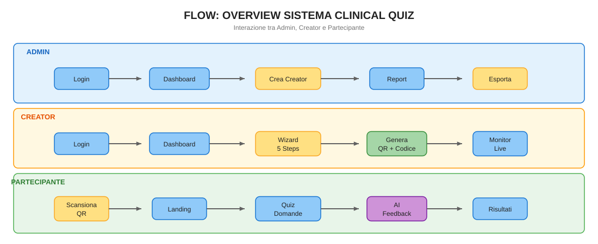
Tre tipologie di utenti con percorsi dedicati e interconnessi
Gestione piattaforma, creazione Creator, report e statistiche globali.
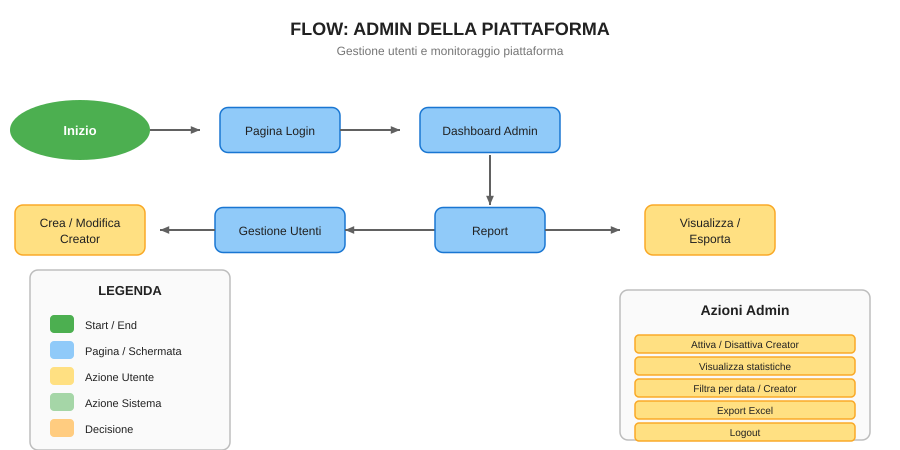
Wizard 5 step, import domande, pubblicazione QR e monitoraggio live.
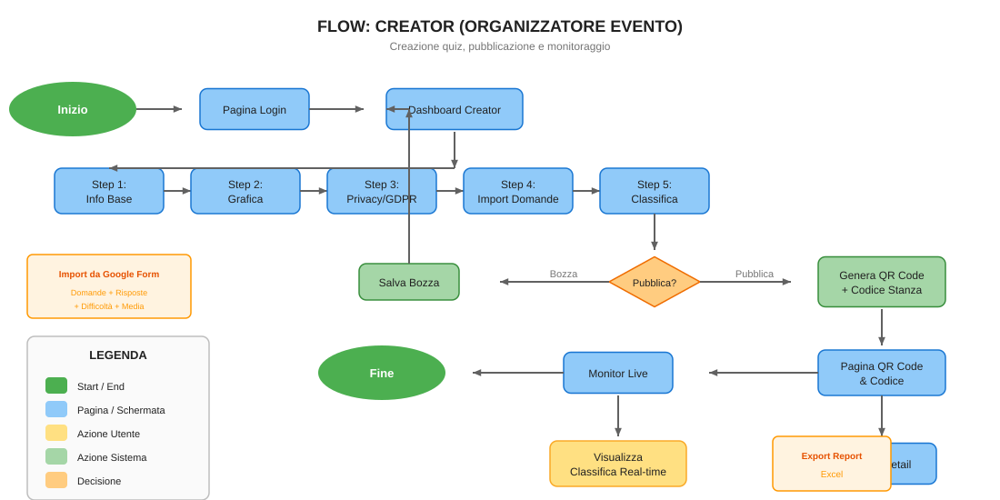
Accesso QR, quiz con difficoltà adattiva, feedback AI e classifica.
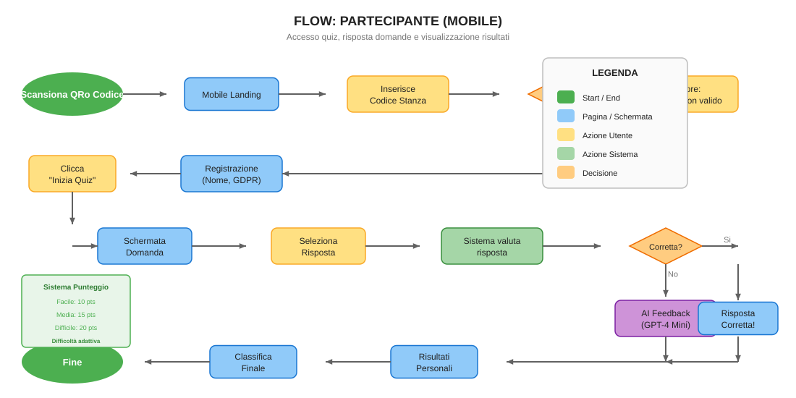
Amministrazione completa della piattaforma Clinical Quiz
Flusso Admin • Step 1 di 5
Schermata di accesso unificata per Admin e Creator. Il sistema riconosce automaticamente il tipo di utente dalle credenziali e reindirizza alla dashboard appropriata.
Le credenziali Admin vengono generate dal team di sviluppo durante il setup iniziale della piattaforma. L'Admin riceve username e password via canale sicuro e può modificare la password al primo accesso.
L'interfaccia è minimalista e professionale, con campo username e password chiaramente etichettati. Il pulsante "ACCEDI" avvia la validazione e il redirect alla dashboard corretta.
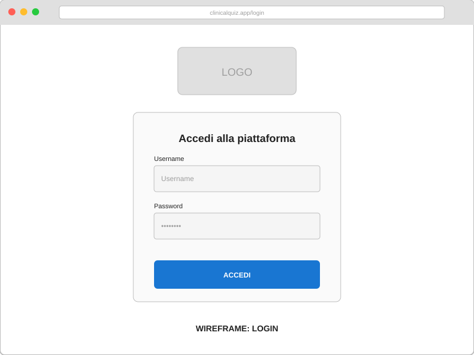
Flusso Admin • Step 2 di 5
La Dashboard Admin è il centro di controllo dell'intera piattaforma. Fornisce una visione immediata dello stato di salute del sistema e delle attività in corso.
Le tre metriche principali in alto mostrano: il numero di Creator attualmente attivi sulla piattaforma, il totale dei quiz creati dall'inizio, e il conteggio cumulativo di tutte le partecipazioni registrate.
La tabella "Attività Recente" mostra in tempo reale gli ultimi eventi: quale Creator ha creato o avviato un quiz, quando, e quanti partecipanti hanno già risposto. Questo permette all'Admin di monitorare l'utilizzo della piattaforma.
La sidebar laterale fornisce accesso rapido a tutte le sezioni: Dashboard per la panoramica, Gestione Utenti per amministrare i Creator, e Report per le statistiche aggregate.
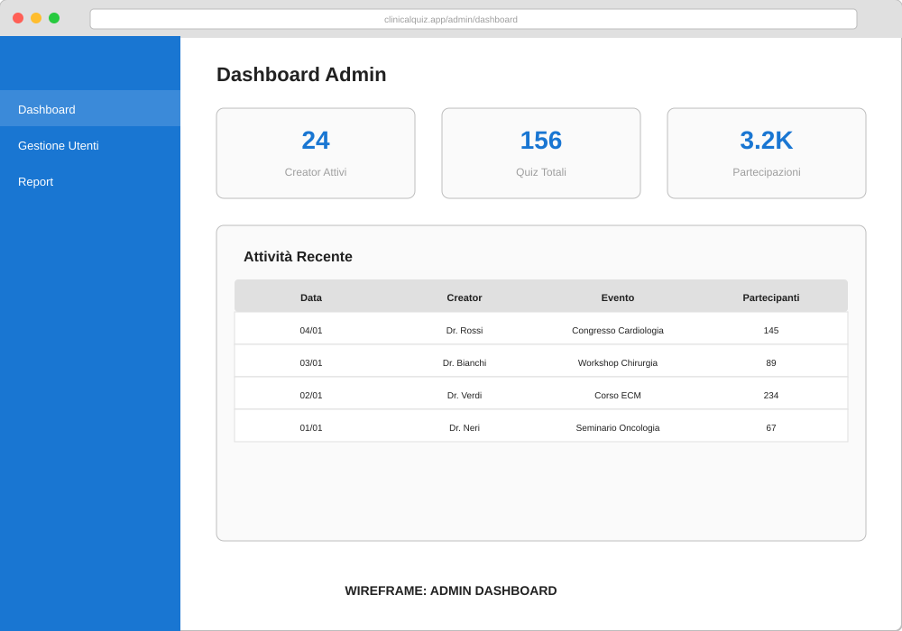
Flusso Admin • Step 3 di 5
Sezione dedicata alla gestione completa degli account Creator. L'Admin visualizza tutti gli organizzatori registrati sulla piattaforma con informazioni dettagliate.
La tabella mostra per ogni Creator: nome completo, email di contatto, numero di quiz creati, e stato dell'account (Attivo o Inattivo). Lo stato inattivo impedisce l'accesso ma preserva tutti i dati storici.
La barra di ricerca permette di filtrare rapidamente per nome o email. La paginazione gestisce liste numerose mantenendo performance ottimali.
Per ogni riga sono disponibili azioni rapide: "Edit" per modificare i dati del Creator, "Del" per disattivare l'account (soft delete che mantiene lo storico per compliance).
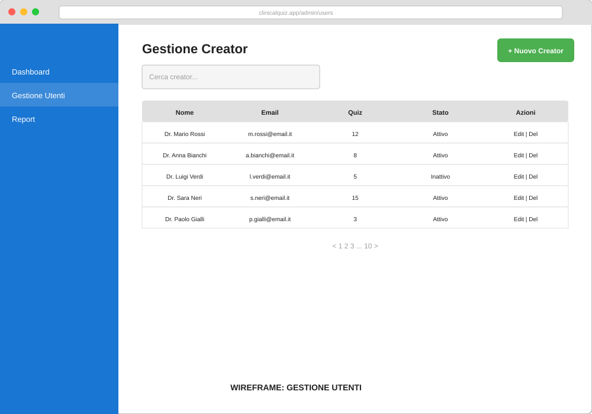
Flusso Admin • Step 4 di 5
Form per la creazione di un nuovo account Creator. Ogni organizzatore di eventi medici necessita di un account per accedere alla piattaforma e creare i propri quiz.
L'Admin inserisce i dati del nuovo Creator: nome completo per l'identificazione, username univoco che sarà usato per il login, email valida per comunicazioni e recupero password.
La password viene generata automaticamente dal sistema con criteri di sicurezza (minimo 12 caratteri, maiuscole, numeri, simboli) oppure può essere inserita manualmente dall'Admin.
Il checkbox "Invia credenziali via email" permette l'invio automatico di un'email al nuovo Creator con le istruzioni di accesso. Una copia viene sempre inviata all'Admin per backup e tracciabilità.
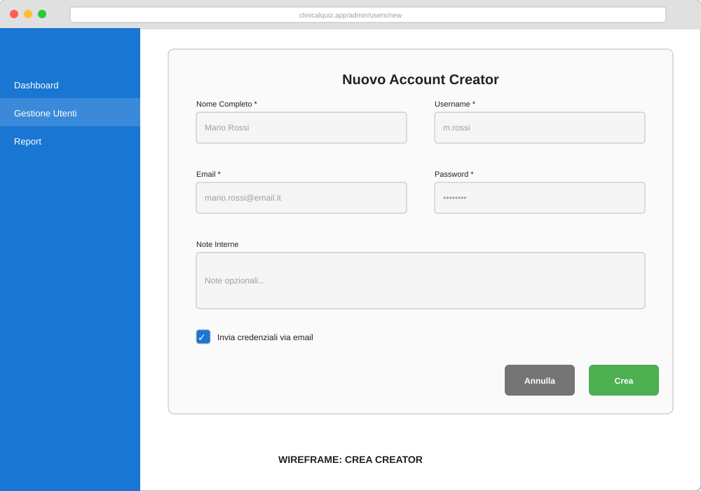
Flusso Admin • Step 5 di 5
Sezione per la business intelligence della piattaforma. L'Admin accede a statistiche aggregate che mostrano l'andamento complessivo e permettono analisi approfondite.
I filtri temporali permettono di analizzare periodi specifici: ultimo mese, trimestre, anno, o range personalizzato. È possibile anche filtrare per singolo Creator per valutare le performance individuali.
Le card in alto mostrano i KPI principali: Creator attivi nel periodo, quiz creati, partecipazioni totali, e media risposte corrette (indicatore qualità quiz).
Il grafico "Andamento Partecipazioni" visualizza il trend temporale, utile per identificare picchi durante eventi o congressi. La sezione "Top Eventi" evidenzia i quiz con maggiore engagement.
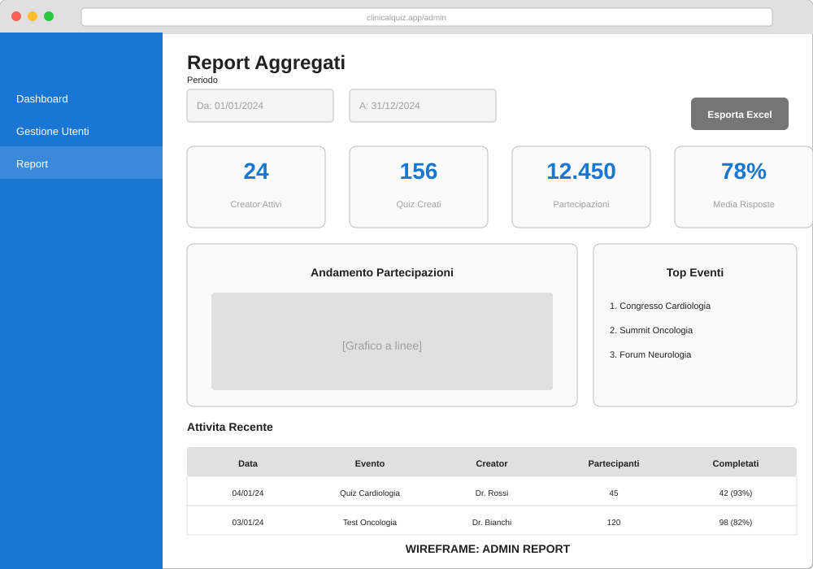
Creazione quiz, personalizzazione e monitoraggio eventi
Flusso Creator • Step 1 di 8
La Dashboard Creator è la home personale e unica schermata principale dell'organizzatore eventi. Contiene tutto il necessario: statistiche, lista quiz e accesso alla creazione.
Le tre card metriche mostrano: quiz attualmente attivi, totale cumulativo di partecipanti a tutti gli eventi, e la media delle risposte esatte (indicatore di qualità/difficoltà dei quiz).
La lista "I Miei Quiz" è un contenitore scrollabile che mostra tutti i quiz ordinati per data. Per ogni quiz è visibile: titolo, stato (Attivo/Bozza/Concluso), data evento e luogo - le stesse informazioni inserite nello Step 1.
Il pulsante prominente "+ Nuovo Quiz" avvia il wizard di creazione guidato in 5 step. Cliccando "Apri" su un quiz esistente si accede alla pagina di dettaglio quiz.
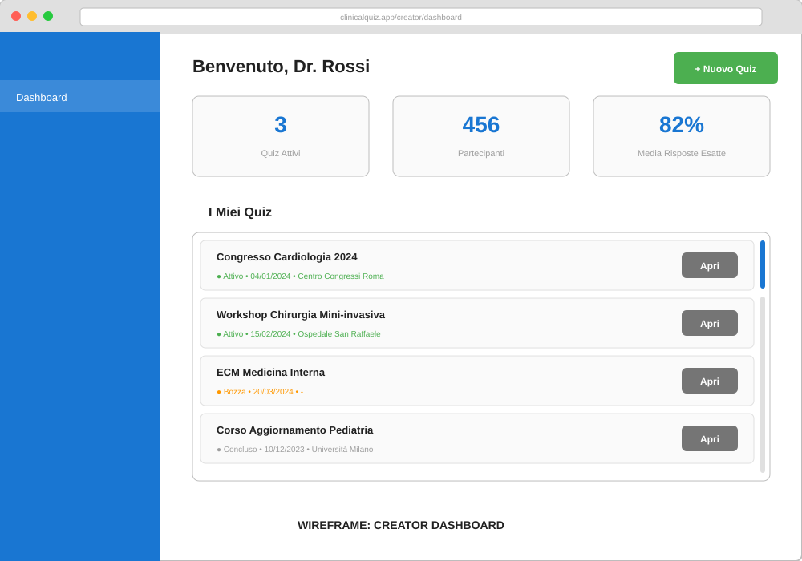
Flusso Creator • Step 2 di 8
Primo step del wizard di creazione. Il Creator inserisce le informazioni fondamentali che identificano l'evento e il quiz associato.
Il progress indicator orizzontale mostra chiaramente i 5 step del wizard con numeri e label. Lo step attuale è evidenziato in blu, quelli completati mostrano un check, quelli futuri sono grigi.
Il Titolo Quiz è il nome che verrà mostrato ai partecipanti nell'header mobile e nei report. Deve essere descrittivo e identificare chiaramente l'evento (es. "Congresso Nazionale Cardiologia 2024").
La Descrizione appare nella schermata di registrazione e può contenere istruzioni specifiche per i partecipanti. Data e Luogo sono opzionali ma utili per i report.
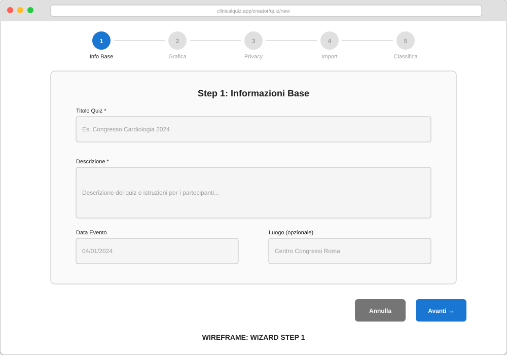
Flusso Creator • Step 3 di 8
Secondo step per la personalizzazione grafica. Il Creator può brandizzare l'esperienza quiz con l'identità visiva del proprio evento o organizzazione.
L'area upload logo supporta drag & drop e click per selezionare file. Formati accettati: PNG e JPG. Dimensione massima 2MB. Il logo apparirà nell'header mobile e nei report PDF.
I tre color picker permettono di definire: Colore Primario (header, pulsanti principali, elementi di focus), Colore Secondario (testi secondari, bordi, sfondi alternativi), Colore Accento (evidenziazioni, badge, notifiche).
L'anteprima in tempo reale mostra come appariranno gli elementi grafici nell'interfaccia mobile, permettendo di verificare la leggibilità e la coerenza visiva prima di procedere.
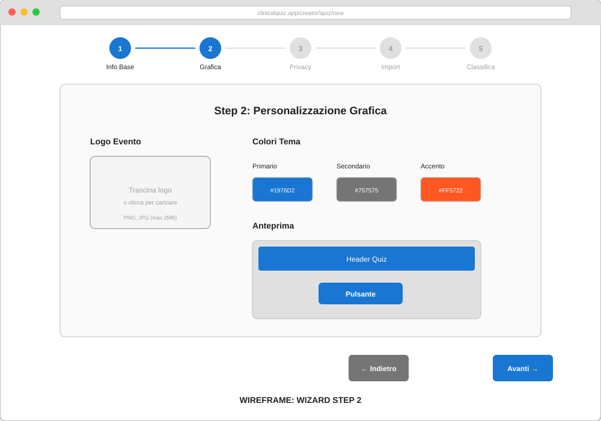
Flusso Creator • Step 4 di 8
Terzo step per la configurazione privacy e GDPR. Il Creator decide quali dati personali richiedere ai partecipanti in base alle necessità dell'evento.
I checkbox permettono di selezionare i campi da mostrare nel form di registrazione: Nome e Cognome (consigliati per la classifica), Email (per follow-up o invio certificati), Professione (per segmentazione report).
Il toggle "Consenso GDPR" attiva la richiesta obbligatoria di accettazione privacy prima di iniziare il quiz. Se attivo, il partecipante deve spuntare il checkbox per procedere.
Il testo privacy è personalizzabile per adattarsi alle policy specifiche dell'organizzazione. Un link "Leggi informativa" può rimandare a una pagina dedicata con l'informativa completa.
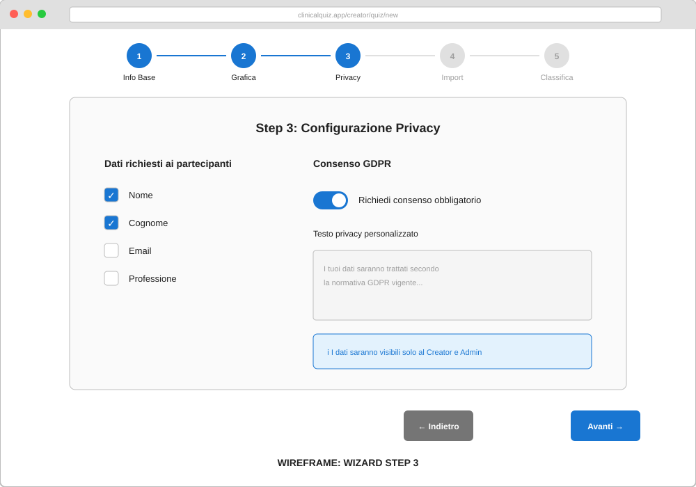
Flusso Creator • Step 5 di 8
Quarto step per l'importazione domande da Google Form. Questa integrazione permette ai Creator di preparare le domande in un ambiente familiare e flessibile.
Il Creator incolla l'URL del Google Form nel campo dedicato e clicca "Importa". Il sistema si connette alle API di Google e estrae automaticamente tutte le informazioni strutturate dal form.
Per ogni domanda vengono importati: testo della domanda, tutte le opzioni di risposta, indicazione di quale sia la risposta corretta, livello di difficoltà (Facile/Media/Difficile), eventuali link a media (immagini, video YouTube).
La tabella mostra un'anteprima delle domande importate. Il Creator può riordinare le domande con drag & drop, rimuovere domande non desiderate, o modificare singoli elementi prima di procedere.
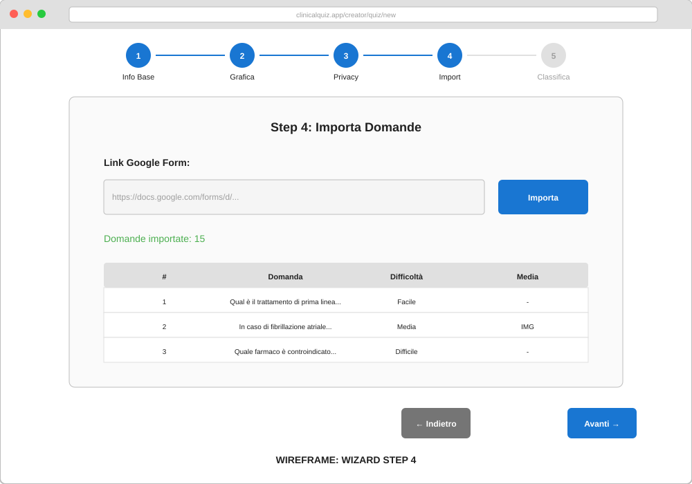
Flusso Creator • Step 6 di 8
Ultimo step del wizard per la configurazione della classifica. Le impostazioni sono organizzate in sezioni con checkbox per una selezione chiara e immediata.
La sezione "Privacy Username" offre tre opzioni mutualmente esclusive: Nome pubblico (Mario Rossi), Nome privato con solo iniziali (M.R.), o completamente anonimo (#123). Il Creator decide il livello di privacy appropriato per l'evento.
La sezione "Posizioni Visibili" permette di scegliere quanti partecipanti mostrare: Top 10, Top 20, o Tutti. Queste opzioni bilanciano competitività e inclusività.
Le "Opzioni Aggiuntive" includono: mostrare punteggio in classifica, aggiornamento real-time, notifica cambio posizione, abilitazione condivisione social del risultato.
L'anteprima mostra in tempo reale come apparirà la classifica. Al termine, "Salva Bozza" per completare dopo, o "Pubblica" per attivare il quiz.
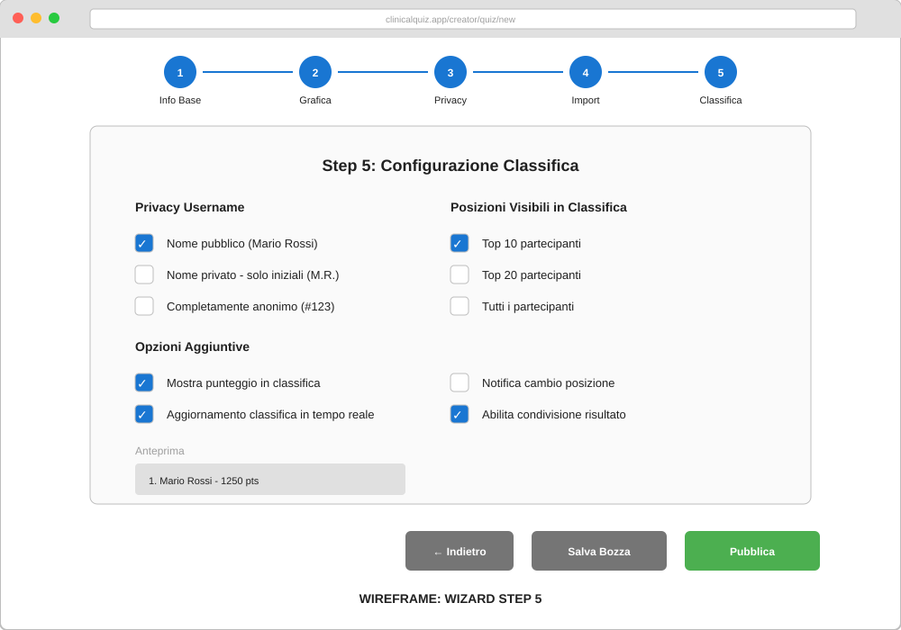
Flusso Creator • Step 7 di 8
Dopo la pubblicazione, il sistema genera automaticamente gli strumenti di accesso per i partecipanti. Questa schermata conferma il successo e fornisce tutto il necessario per condividere il quiz.
Il QR Code è generato in alta risoluzione (minimo 1024x1024 pixel) per garantire la scansionabilità anche su schermi proiettati o stampe di grandi dimensioni. Il pulsante "Scarica PNG" salva l'immagine localmente.
Il Codice Stanza è un identificativo alfanumerico univoco (formato: EVT-ANNO-XXX) facile da comunicare verbalmente durante l'evento. I partecipanti possono digitarlo manualmente se non possono scansionare il QR.
L'URL diretto (es. clinicalquiz.app/q/EVT-2024-ABC) può essere copiato e condiviso via email, chat, o inserito in presentazioni. Cliccando "Copia Link" l'URL viene copiato negli appunti.
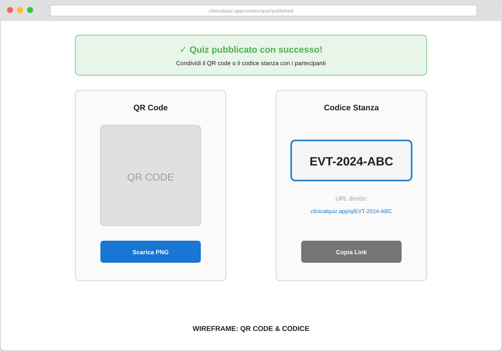
Flusso Creator • Step 8 di 8
Pagina di dettaglio e monitoraggio in tempo reale. Il Creator visualizza tutte le statistiche live durante lo svolgimento dell'evento e può gestire il quiz.
L'header mostra titolo evento, stato (badge verde "Attivo"), e azioni rapide: "Modifica" per tornare al wizard, "Termina" per chiudere il quiz ai nuovi partecipanti.
Le 5 metriche in tempo reale mostrano: partecipanti totali che hanno iniziato, completati con percentuale, attualmente in corso, punteggio medio raggiunto, tempo medio di completamento.
La sezione "Classifica Live" si aggiorna automaticamente ogni 5 secondi mostrando i top performer. Il Creator può proiettare questa sezione su schermo per i partecipanti in sala.
Il pulsante "Esporta Excel" permette di scaricare tutti i dati dei partecipanti in formato Excel (.xlsx) per analisi successive o archiviazione.
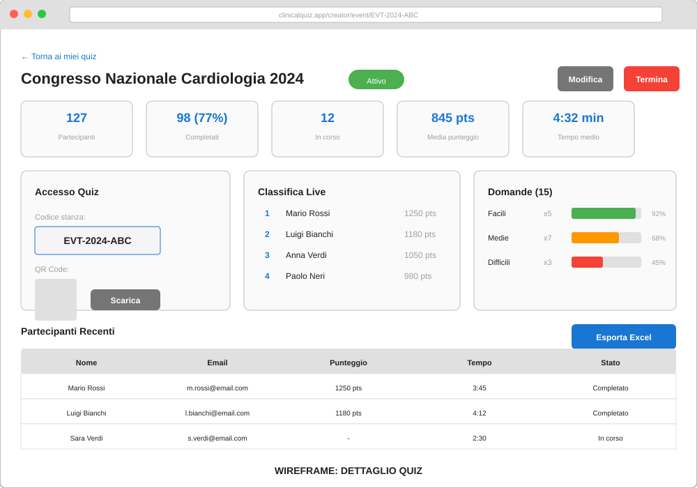
Esperienza mobile ottimizzata con feedback AI educativo
Flusso Partecipante • Step 1 di 7
Prima schermata che il partecipante visualizza sul proprio smartphone. L'interfaccia è ottimizzata per dispositivi mobile con elementi touch-friendly e layout responsive.
Il logo dell'evento (se configurato dal Creator) appare in alto per confermare visivamente che si sta accedendo al quiz corretto. Il messaggio di benvenuto introduce brevemente l'esperienza.
Il campo "Codice Stanza" permette l'inserimento manuale del codice alfanumerico comunicato verbalmente durante l'evento. Il formato standard (EVT-XXXX-XXX) aiuta a evitare errori di digitazione.
In alternativa, il pulsante "Scansiona QR Code" attiva la fotocamera per la scansione diretta del QR proiettato o stampato. Questa è la modalità più rapida e consigliata per eventi live.
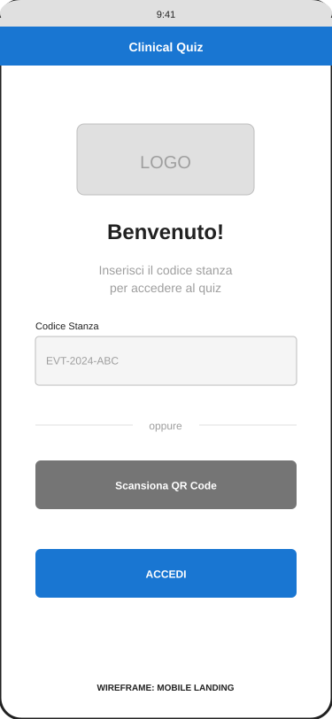
Flusso Partecipante • Step 2 di 7
Schermata di registrazione rapida prima dell'inizio del quiz. I campi mostrati sono quelli configurati dal Creator nello Step 3 del wizard.
Il logo e nome evento confermano al partecipante che sta accedendo al quiz corretto. Il messaggio di benvenuto può contenere istruzioni specifiche definite dal Creator.
I campi form sono ottimizzati per input mobile: tastiere appropriate per ogni tipo (testo, email), autocomplete disabilitato per privacy, validazione inline con feedback visivo.
Se il Creator ha attivato il consenso GDPR, appare un checkbox obbligatorio con link all'informativa completa. Il partecipante deve accettare per procedere.
Il box informativo mostra: numero di domande nel quiz e tempo stimato di completamento, aiutando il partecipante a decidere se procedere.
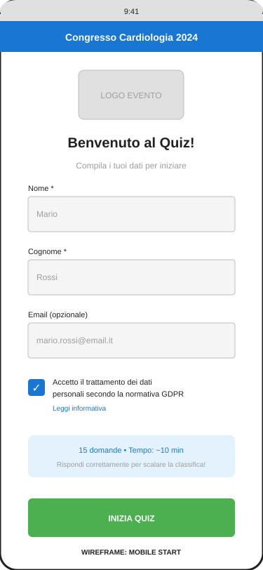
Flusso Partecipante • Step 3 di 7
Schermata principale del quiz con domanda e opzioni di risposta. L'interfaccia è progettata per massimizzare la leggibilità e la velocità di risposta.
Il badge difficoltà in alto indica il livello corrente della domanda (Facile/Media/Difficile) con colori distintivi. La progress bar mostra l'avanzamento e il punteggio è sempre visibile.
Il timer circolare countdown mostra i secondi rimanenti. Il colore cambia da verde a giallo a rosso negli ultimi 10 secondi per creare urgenza senza stress eccessivo.
La card domanda contiene il testo formattato. Sotto, le 4 opzioni di risposta sono presentate come card selezionabili. Toccando un'opzione si evidenzia con bordo colorato.
Il pulsante "CONFERMA" finalizza la risposta. Se il timer scade prima della conferma, viene registrata l'opzione selezionata, o nessuna risposta se non selezionata.
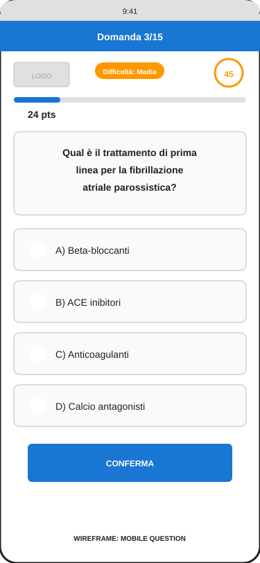
Flusso Partecipante • Step 4 di 7
Schermata di feedback quando il partecipante risponde correttamente. L'icona verde e il badge difficoltà mostrano chiaramente il livello della domanda appena superata.
Il sistema utilizza un algoritmo di difficoltà adattiva: il punteggio varia in base alla difficoltà della domanda (es. Facile: 10 pts, Media: 15 pts, Difficile: 20 pts). Il badge colorato indica sempre il livello corrente.
La progressione è dinamica: dopo 3 risposte corrette consecutive in una categoria, il partecipante accede alle domande di difficoltà superiore. Viceversa, dopo 2 risposte errate si scende di un livello.
Le domande di ogni categoria vengono estratte in modo casuale per ciascun partecipante, garantendo un'esperienza unica. Si consiglia di inserire molte domande per categoria per massimizzare la varietà.
Il breve feedback educativo conferma perché la risposta era corretta, rinforzando la conoscenza. Il punteggio totale aggiornato è sempre visibile.
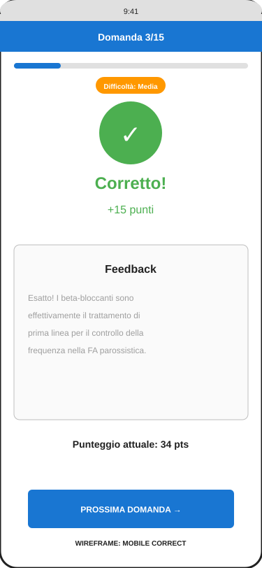
Flusso Partecipante • Step 5 di 7
Schermata per risposta errata con feedback AI. Questo è il momento educativo chiave dove l'intelligenza artificiale GPT-4 Mini fornisce una spiegazione personalizzata.
L'icona rossa segnala chiaramente l'errore, ma il tono è costruttivo. La risposta corretta è evidenziata immediatamente. Non ci sono punti negativi: sbagliare significa semplicemente "sprecare" una domanda.
Il "Feedback del Dr. AI" è generato in tempo reale da GPT-4 Mini. Il modello impersona un medico chirurgo esperto che spiega perché la risposta era sbagliata e fornisce un approfondimento clinico contestuale.
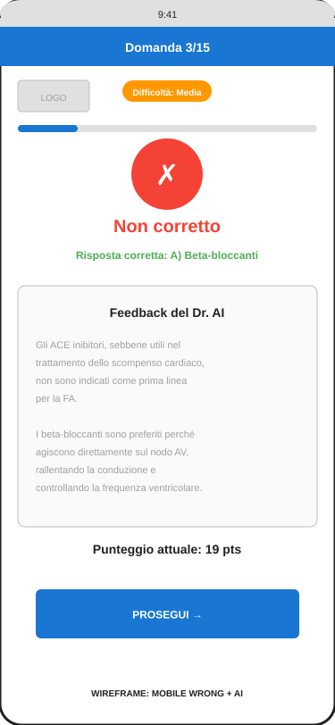
Flusso Partecipante • Step 6 di 7
Schermata di riepilogo finale al termine del quiz. Il partecipante visualizza il proprio risultato complessivo con statistiche dettagliate.
Il punteggio totale è mostrato in grande evidenza al centro, con un'animazione di reveal che crea suspense. Sotto, le statistiche dettagliano la performance.
Le statistiche mostrano: risposte corrette su totale (es. 12/15), percentuale di successo calcolata, tempo totale impiegato per completare il quiz.
Il feedback finale è generato automaticamente basandosi sulla percentuale: >90% eccellente, 70-90% buono, 50-70% sufficiente, <50% da migliorare. Il tono è sempre incoraggiante.
Il pulsante "VEDI CLASSIFICA" porta alla leaderboard dove il partecipante può vedere la propria posizione rispetto agli altri.
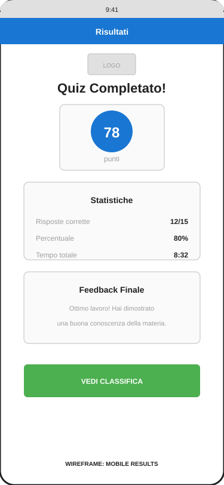
Flusso Partecipante • Step 7 di 7
La classifica in tempo reale mostra il posizionamento di tutti i partecipanti. Questa schermata può essere aggiornata durante l'evento per vedere le posizioni cambiare.
La propria posizione è evidenziata con sfondo colorato per identificazione immediata (es. "#7 Tu"). Le prime 3 posizioni hanno icone medaglia (oro, argento, bronzo).
La visualizzazione dei nomi segue la configurazione del Creator: nome completo, solo iniziali, o anonimo. Questo permette di bilanciare competitività e privacy.
Importante: Il quiz non può essere ripetuto. Una volta completato, il partecipante torna sempre su questa pagina della classifica. Questo garantisce equità e previene tentativi multipli per migliorare il punteggio.
Il pulsante "CONDIVIDI" permette di generare un'immagine condivisibile sui social, mentre "CHIUDI" termina la sessione. La pagina resta sempre accessibile tramite lo stesso codice stanza.
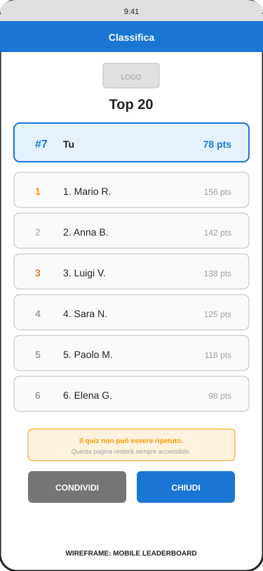
Clinical Quiz: 25 schermate, 3 flussi utente, 1 piattaforma completa